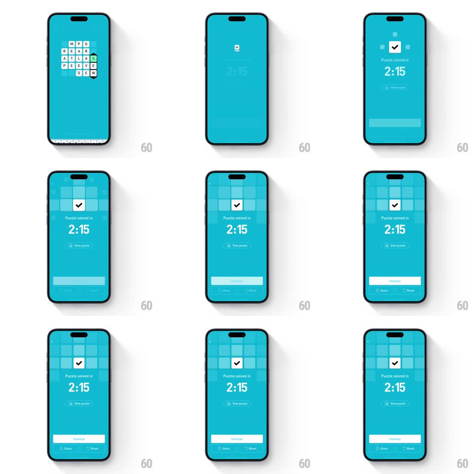

Media
Frame-by-frame

Rebuild this interaction 1:1: Elevate's puzzle-solved tick - the word-search grid shrinks back as a white checkmark badge springs up and locks in over "Puzzle solved in 2:15".

Rebuild this interaction 1:1: Elevate's puzzle-solved tick - the word-search grid shrinks back as a white checkmark badge springs up and locks in over "Puzzle solved in 2:15". ## Integration Integration: stack-agnostic spec - springs given as stiffness/damping, timed motions as duration + curve; map every value to your framework and animation library of choice. ## Scene Teal screen: a letter grid (M P G / R E A R / A T L A S...) with the found word's tiles highlighted green; the solved state centers a white rounded-square badge with a black checkmark above "Puzzle solved in 2:15", a "View puzzle" link, and a solid Continue bar with Share/Reset below. ## Motion spec Pattern: receding grid + springy tick badge. - On the final correct word: the grid tiles shrink uniformly (scale 1 -> 0.7) and fade to a dim ghost grid behind the summary (400ms, ease-out) - depth, not removal. - The badge enters from 0 scale with a hard spring (spring ~480/16, ~450ms) - one clean overshoot; the check inside draws on (trim path, 250ms, starting 100ms in). - "Puzzle solved in" fades up (200ms), then the time "2:15" counts up from 0:00 rapidly (600ms) and pops at its final value. - The Continue bar slides up and fills from translucent to solid white (300ms) as Share and Reset fade in beneath it. ## Calibration - The ghost grid stays visible behind the summary - scaled down and ~20% opacity. - Badge is pure white on teal; the check is black - maximum contrast, no gradient. ## Reduced motion Grid fades; badge fades in at final size; no count-up. ## Don't miss - The green highlight tiles of the last found word remain lit inside the ghost grid. - The whole sequence lands in ~1.2s - it is a quick punch, not a ceremony.